In early November of 1973-during a visit to MOTHER's new home in the mountains of western North Carolina-New Alchemist John Todd gave the magazine's editors about the 14th-generation Xerox copy of what can conservatively be described as a dynamite paper.
We had only to glance at this extraordinary document to realize that the paper (originally written at the request of the Royal Swedish Academy of Sciences) is one of the most concise-yet most sweeping-examinations yet made of the real problems of the world. Read it and see for yourself. The paper which follows-written by the same author for a press conference held this past January-is more of the same.
The man who produced this work is Howard T. Odum, Ph. D. . . . Director of the Center for Wetlands and a Graduate Research Professor at the University of Florida in Gainesville. In the past, he has been Professor of Ecology at the University of North Carolina, Chief Scientist for the Puerto Rico Nuclear Center and Director of the Institute of Marine Science of the University of Texas at Port Aransas. Professor Odum has many other environmental credits to his name including the book, Environment, Power and Society (John Wiley, 1972).
We feel that Dr. Odum's papers, presented here with his permission and the permission of The Royal Academy of Sciences of Sweden, are important enough to replace the PLOWBOY INTERVIEW usually found in this section of the magazine.
As long-predicted energy shortages appear, as questions about the interaction of energy and environment are raised in legislatures and parliaments, and as energy-related inflation dominates public concern, many are beginning to see that there is a unity of the single system of energy, ecology, and economics. The world's leadership, however, is mainly advised by specialists who study only a part of the system at a time.
Instead of a single system's understanding, we have adversary arguments dangerous to the welfare of nations and the role of man as the earth's information bearer and programmatic custodian. Many economic models ignore the changing force of energy, regarding effects of energy sources as an external constant; ecoactivists cause governments to waste energy in unnecessary technology; and the false gods of growth and medical ethics make famine, disease, and catalytic collapse more and more likely for much of the world. Some energy specialists consider the environment as an antagonist instead of a major energy ally in supporting the biosphere.
Instead of the confusion that comes from the western civilization's characteristic educational approach of isolating variables in tunnel-vision thinking, let us here seek common sense overview which comes from overall energetics. Very simple overall energy diagrams clarify issues quantitatively, indicating what is possible. The diagrams and symbols are explained further in a recent book (see Ref. 1).
For example, Figure 1 shows the basis of production in interaction of fuel reserves, steady energies of solar origin and feedback of work from the system's structure. Figure 1 is the computer simulation of this model for our existence, showing a steady state after our current growing period. As the fuel tank is drained, we return to a lower solar base of simpler agriculture. Simple macroscopic minimodels based on overview of world energy provides the same kind of trend curves as the detailed models of Forrester and Meadows (see Ref. 2). With major changes confronting us, let us consider here some of the main points that we must comprehend so we may be prepared for the future.
1. The true value of energy to society is the net energy, which is what's left after the energy costs of getting and concentrating that energy are subtracted.
Many forms of energy are low grade because they have to be concentrated, transported, dug from deep in the earth or pumped from far at sea. Much energy has to be used directly and indirectly to support the machinery, people, supply systems, etc., to deliver the energy. If it takes ten units of energy to bring ten units of energy to the point of use, then there is no net energy. Right now we dig further and further, deeper and deeper, and go for energies that are more and more dilute in the rocks. Sunlight is also a dilute energy that requires work to harness.
We are still expanding our rate of consumption of gross energy, but since we are feeding a higher and higher percentage back into the energy seeking process, we are decreasing our percentage of net energy production. Many of our proposed alternative energy sources take more energy feedback than present processes. Figure 2 shows net energy emerging beyond the work and structural maintenance costs of energy processing.
2. Worldwide inflation is driven in part by the increasing fraction of our fossil fuels that have to be used in getting more fossil and other fuels.
If the money circulating is the same or increasing, and if the quality energy reaching society for its general work is less because so much energy has to go immediately into the energy-getting process, then the real work to society per unit money circulated is less. Money buys less real work of other types and thus money is worth less. Because the economy and total energy utilization are still expanding, we are misled to think the total value is expanding and we allow more money to circulate which makes the money-to-work ratio even larger. Figure 3 shows the circulation of money that constitutes the GNP in a counter-current to the energy flow.
3. Many calculations of energy reserves which are supposed to offer years of supply are as gross energy rather than net energy and thus may be of much shorter duration than often stated.
Suppose for every ten units of some quality of oil shale proposed as an energy source there were required nine units of energy to mine, process, concentrate, transport, and meet environmental requirements. Such a reserve would deliver 1/10 as much net energy and last 1/10 as long as was calculated. Leaders should demand of our estimators of energy reserves that they make their energy calculations in units of net energy. The net reserves of fossil fuels are mainly unknown but they are much smaller than the gross reserves which have been the basis of public discussions and decisions that imply that growth can continue.
4. Societies compete for economic survival by Lotka's principle (see Ref. 3), which says that systems win and dominate that maximize their useful total power from all sources and flexibly distribute this power toward needs affecting survival.
The programs of forests, seas, cities, and-countries survive that maximize their system's power for useful purposes. The first requirement is that opportunities to gain inflowing power be maximized, and the second requirement is that energy utilization be effective and not wasteful as compared to competitors or alternatives. For further discussion see Lotka (Ref. 3) and Odum (Ref. 1).
5. During times when there are opportunities to expand one's power inflows, the survival premium by Lotka's principle is on rapid growth even though there may be waste.
We observe dog-eat-dog growth competition every time a new vegetation colonizes a bare field where the immediate survival premium is first placed on rapid expansion to cover the available energy receiving surfaces. The early growth ecosystems put out weeds of poor structure and quality, which are wasteful in their energy-capturing efficiencies, but effective in getting growth even though the structures are not long lasting. Most recently, modern communities of man have experienced two hundred years of colonizing growth, expanding to new energy sources such as fossil fuels, new agricultural lands, and other special energy sources. Western culture, and more recently, Eastern and Third World cultures, are locked into a mode of belief in growth as necessary to survival. "Grow or perish" is what Lotka's principle requires, but only during periods when there are energy sources that are not yet tapped. Figure 3 shows the structure that must be built in order to be competitive in processing energy.
6. During times when energy flows have been tapped and there are no new sources, Lotka's principle requires that those systems win that do not attempt fruitless growth but instead use all available energies in long-staying, high-diversity, steady - state works.
Whenever an ecosystem reaches its steady state after periods of succession, the rapid-net-growth specialists are replaced by a new team of higher-diversity, higher-quality, longer-living, better-controlled, and stable components. Collectively, through division of labor and specialization, the climax team gets more energy out of the steady flow of available source energy than those specialized in fast growth could.
Our system of man and nature will soon be shifting from rapid growth as the criterion of economic survival to steady-state non-growth as the criterion of maximizing one's work for economic survival (Figure 1). The timing depends only on the reality of one or two possibly high-yielding nuclear energy processes (fusion and breeder reactions) which may or may not be very yielding,
Ecologists are familiar with both growth states and steady state, and observe both in natural systems in their work routinely, but economists were all trained in their subject during rapid growth and most don't even know there is such a thing as steady state. Most economic advisors have never seen a steady state even though most of man's million year history was close to steady state. Only the last two centuries have seen a burst of temporary growth because of temporary use of special energy supplies that accumulated over long periods of geologic time.
7. High quality of life for humans and equitable economic distribution are more closely approximated in steady-state than in growth periods.
During growth, emphasis is on competition, and large differences in economic and energetic welfare develop; competitive exclusion, instability, poverty, and unequal wealth are characteristic. During steady state, competition is controlled and eliminated, being replaced with regulatory systems, high division and diversity of labor, uniform energy distributions, little change, and growth only for replacement purposes. Love of stable-system quality replaces love of net gain. Religious ethics adopt something closer to that of those primitive peoples that were formerly dominant in zones of the world with cultures based on the steady energy flows from the sun. Socialistic ideals about distribution are more consistent with steady state than growth.
8. The successfully competing economy must use its net output of richer-quality energy flows to subsidize the poorer-quality energy flow so that the total power is maximized.
In ecosystems, diversity of species develop that allow more of the energies to be tapped. Many of the species that are specialists in getting lesser and residual energies receive subsidies from the richer components. For example, the sun leaves on top of trees transport fuels that help the shaded leaves so they can get some additional energy from the last rays of dim light reaching the forest floor. The system that uses its excess energies in getting a little more energy, even from so urces that would not be net yielding alone, develops more total work and more resources for total survival. In similar ways, we now use our rich fossil fuels to keep all kinds of goods and services of our economy cheap so that the marginal kinds of energies may receive the subsidy benefit that makes them yielders, whereas they would not be able to generate much without the subsidy. Figure 4 shows the role of diversity in tapping auxiliary energies and maintaining flexibility to changing sources.
9. Energy sources which are now marginal, being supported by hidden subsidies based on fossil fuel, become less economic when the hidden subsidy is removed.
A corollary of the previous principle of using rich energies to subsidize marginal ones is that the marginal energy sources will not be as net yielding later, since there will be no subsidy. This truth is often stated backwards in economists' concepts because there is inadequate recognition of external changes in energy quality. Often they propose that marginal energy sources will be economic later when the rich sources are gone. An energy source is not a source unless it is contributing yields, and ability of marginal sources to yield goes down as the other sources of subsidy become poorer. Figure 4 shows these relationships.
10. Increasing energy efficiency with new technology is not an energy solution, since most technological innovations are really diversions of cheap energy into hidden subsidies in the form of fancy, energy-expensive structures.
Most of our century of progress with increasing efficiencies of engines has really been spent developing mechanisms to subsidize a process with a second energy source. Many calculations of efficiency omit these energy inputs. We build better engines by putting more energy into the complex factories for manufacturing the equipment. The percentage of energy yield in terms of all the energies incoming may be less, not greater. Making energy net yielding is the only process not amenable to high energy-based technology.
11. Even in urban areas more than half of the useful work on which our society is based comes from the natural flows of sun, wind, waters, waves, etc., that act through the broad areas of seas and landscapes without money payment. An economy, to compete and survive, must maximize its use of these energies, not destroying their enormous free subsidies. The necessity of environmental inputs is often not realized until they are displaced.
When an area first grows, it may add some new energy sources in fuels and electric power, but when it gets to about 50 percent of the area developed it begins to destroy and diminish as much necessary life-support work that was free and unnoticed as it adds. At this point, further growth may produce a poor ability in economic competition because the area now has higher energy drains. For example, areas that grow too dense with urban developments may pave over the areas that formerly accepted and reprocessed waste waters. As a consequence, special tertiary waste treatments become necessary and monetary and energy drains are diverted from useful works to works that were formerly supplied free.
12. Environmental technology which duplicates the work available from the ecological sector is an economic handicap.
As growth of urban areas has become concentrated, much of our energies and research and development work has been going into developing energy-costing technology to protect the environment from wastes, whereas most wastes are themselves rich energy sources for which there are, in most cases, ecosystems capable of using and recycling wastes as a partner of the city without drain on the scarce fossil fuels. Soils take up carbon monoxide, forests absorb nutrients, swamps accept and regulate floodwaters. If growth is so dense that environmental technology is required, then it is too dense to be economically vital for the combined system of man and nature there. The growth needs to be arrested or it will arrest itself with depressed, poorly competing economy of man and of his environs. For example, there is rarely excuse for tertiary treatment because there is no excuse for such dense packing of growth that the natural buffer lands cannot be a good cheap recycling partner. Man as a partner of nature must use nature well and this does not mean crowd it, out and pave it over; nor does it mean developing industries that compete with nature for the waters and wastes that would be an energy contributor to the survival of both.
13. Solar energy is very dilute and the inherent energy cost of concentrating solar energy into form for human use has already been maximized by forests and food-producing plants. Without energy subsidy there is no yield from the sun possible beyond the familiar yields from forestry and agriculture.
Figure 5. Diagrams of three systems of solar energy use.
Advocates of major new energies available from the sun don't understand that the concentrations quality of solar energy is very low, being only 10- 16 kilocalories per cubic centimeter. Much of this has to be used up in upgrading to food quality. Plants build tiny microscopic semiconductor photon receptors that are the same in principle as the solar cells advocated at vastly greater expense by some solar advocates. The plants have already maximized use of sunlight, by which they support an ecosystem whose diverse work helps maximize this conversion as shown in Figure 5 A. If man and his work are substituted for much of the ecosystem so that he and his farm animals do the recycling and management, higher yield results as in sacred cow agriculture (Figure 5 B). Higher yields require large fossil fuel subsidies in doing some of the work. For example, making the solar receiving structures (Figure 5 C), whereas the plants and ecosystem make their equipment out of the energy budget they process. Since man has already learned how to subsidize agriculture and forestry with fossil fuels when he has them, solar technology becomes a duplication. The reason major solar technology has not and will not be a major contributor or substitute for fossil fuels is that it will not compete without energy subsidy from the fossil fuel economy. Some energy savings are possible in house heating on a minor scale.
14. Energy is measured by calories, Btu's, kilowatt hours, and other intraconvertible units, but energy has a scale of quality which is not indicated by these measures. The ability to do work for man depends on the energy quality and quantity, and this is measurable by the amount of energy of a lower-quality grade required to develop the higher grade. The scale of energy goes from dilute sunlight up to plant matter to coal, from coal to oil to electricity and up to the high-quality efforts of computer and human information processing.
15. Nuclear energy is now mainly subsidized with fossil fuels and barely yields net energy.
High costs of mining, processing fuels, developing costly plants, storing wastes, operating complex safety systems, and operating government agencies make present nuclear energy one of the marginal sources which add some energy now, while they are subsidized by a rich economy. A self-contained, isolated nuclear energy does not now exist. Since the present nuclear energy is marginal while it uses the cream of rich fuels accumulated during times of rich fossil fuel excess, and because the present rich reserves of nuclear fuel will last no longer than fossil fuels, there may not be a major long-range effect of present nuclear technology on economic survival. High energy cost of nuclear construction may be a factor accelerating the exhaustion of the richer fuels. Figure 4 illustrates the principle. Breeder Process: The Breeder Process is now being given its first tests of economic effectiveness and we don't yet know how net yielding it will be. The present nuclear plants are using up the rich fuels that could support the breeder reactors if these turn out to be net yielders over and beyond the expected high energy costs in safety costs, occasional accidents, reprocessing plants, etc. Should we use the last of our rich fossil fuel wealth for the high research and development costs and high capital investments of processes too late to develop a net yield? Fusion: The big question is will fusion be a major net yield? The feasibility of pilot plants with the fusion process is unknown. There is no knowledge yet as to the net energy in fusion or the amounts of energy subsidy fusion may require. Because of this uncertainty, we cannot be sure about the otherwise sure-leveling and decline in total energy flows that may soon be the pattern for our world.
16. Substantial energy storages are required for stability of an economy against fluctuations of economies, or of natural causes, and of military threats.
The frantic rush to use the last of the rich oils and gas that are easy to harvest for a little more growth and tourism is not the way to maintain power stability or political and military security for the world community of nations as a whole. World stability requires a de-energizing of capabilities of vast war, and an evenly distributed power base for regular defense establishments, which need to be evenly balanced without great power gradients that encourage change of military boundaries. A two-year storage is required for stability of a component.
17. The total tendency for net favorable balance of payments of a country relative to others depends on the relative net energy of that country including its natural and fuel-based energies minus its wastes and nonproductive energy uses.
Countries with their own rich energies can export goods and services with less requirement for money than those that have to use their money to buy their fuels. Those countries with, inferior energy flows into useful work become subordinate energy dependents to other countries. A country that sells oil but does not use it within its boundaries to develop useful work is equally subordinate since a major flow of necessary high-quality energy in the form of technical goods and services is external in this case. The country with the strongest position is the one with a combination of internal sources of rich energies and internal sources of developed structure and information based on the energy. The relations of energy sources to payment balances are given in Figure 6.
18. During periods of expanding energy availabilities, many kinds of growth-priming activities may favor economic vitality and the economy's ability to compete. Institutions, customs, and economic policies aid by accelerating energy consumption in an autocatalytic way.
Many pump-priming properties of fast-growing economies have been naturally selected and remain in procedures of government and culture. Urban concentrations, high use of cars, economic subsidy to growth, oil depletion allowances, subsidies to population growth, advertising, high-rise building, etc., are costly in energy for their operation and maintenance, but favor economic vitality as long as their role as pump primers is successful in increasing the flow of energy over and beyond their special cost. Intensely concentrated densities of power use have been economic in the past because their activities have accelerated the system's growth during a period when there were new energy sources to encompass.
19. During periods when expansion of energy sources is not possible, then the many high-density and growth-promoting policies and structures become an energy liability because their high energy cost is no longer accelerating energy yield.
The pattern of urban concentration and the policies of economic growth stimulation that were necessary and successful in energy growth competition periods are soon to shift. There will be a premium against the use of pump-priming characteristics since there will be no more unpumped energy to prime. What did work before will no longer work and the opposite becomes the pattern that is economically successful. All this makes sense and is commonplace to those who study various kinds of ecosystems, but the economic advisors will be sorely pressed and lose some confidence until they learn about the steady state and its criteria for econmic success. Countries with great, costly investments in concentrated economic activity, excessive transportation customs, and subsidies to industrial expansion will have severe stresses. Even now the countries who have not gone so far in rapid successional growth are setting out to do so at the very time when their former more steady state culture is about to begin to become a more favored economic state comparatively.
20. Systems in nature are known that shift from fast growth to steady state gradually with programmatic substitution, but other instances are known in which, the shift is marked by total crash and destruction of the growth system before the emergence of the succeeding steady-state regime.
Because energies and monies for research, development, and thinking are abundant only during growth and not during energy leveling or decline, there is a great danger that means for developing the steady state will not be ready when they are needed, which may be no more than 5 years away but probably more like 20 years. (If fusion energy is a large net energy yielder, there may be a later growth period when the intensity of human power development begins to affect and reduce the main life support systems of the oceans, atmospheres, and general biosphere.)
The humanitarian customs of the earth's countries now in regard to medical aid, famine, and epidemic are such that no country is allowed to develop major food and other critical energy shortage because the others rush in their reserves.This practice has insured that no country will starve in a major way until we all starve together when the reserves are no longer there.
Chronic disease was evolved with man as his regulator, being normally as a device for infant mortality and merciful old-age death. It provided, on the average, an impersonal and accurate energy testing of body vitalities, adjusting the survival rate to the energy resources. Even in the modem period of high-energy medical miracles, the energy for total medical care systems is a function of the total country's energies, and as energies per capita fall again so will the energy for medicine per capita, and the role of disease will again develop its larger ,role in the population regulation system. Chronic disease at its best was and is a very energy-inexpensive regulator.
Epidemic disease is something else. Nature's systems normally use the principle of diversity to eliminate epidemics. Vice versa, epidemic disease is nature's device to eliminate monoculture, which may be inherently unstable. Man is presently allowed the special high yields of various monocultures including his own high density population, his paper source in pine trees, and his miracle rice only so long as he has special energies to protect these artificial ways and substitute them for disease which would restore the high diversity system, ultimately the more stable flow of energy.
The terrible possibility that is before us is that there will be the continued insistence on growth with our last energies by the economic advisors that don't understand, so that there are no reserves with which to make a change, to hold order, and to cushion a period when populations must drop. Disease reduction of man and of his plant production systems could be planetary and sudden if the ratio of population to food and medical systems is pushed to the maximum at a time of falling net energy. At some point the great gaunt towers of nuclear energy installations, oil drilling, and urban cluster will stand empty in the wind for lack of enough fuel technology to keep them running. A new cycle of dinosaurs will have passed its way. Man will survive as he reprograms readily to that which the ecosystem needs of him so long as he does not forget who is serving who. What is done well for the ecosystem is good for man. However, the cultures that say only what is good for man is good for nature may pass and be forgotten like the rest.
There was a famous theory in paleoecology called orthogenesis which suggested that some of the great animals of the past were part of systems that were locked into evolutionary mechanisms by which the larger ones took over from smaller ones. The mechanisms then became so fixed that they carried the size trend beyond the point of survival, whereupon the species went extinct. Perhaps this -is the main question of ecology, economics, and energy. Has the human system frozen its direction into an orthogenetic path toward cultural crash, or is the great creative activity of the current energy-rich world already sensing the need for change? Are alternatives already being tested by our youth so they will be ready for the gradual transition to a fine steady state that carries the best of our recent cultural evolution into new, more miniaturized, more dilute, and more delicate ways of man-nature?
In looking ahead, the United States and some other countries may be lucky to be forced by changing energy availabilities to examine themselves, level their, growth, and change their culture towards the steady state early enough so as to be ready with some tested designs before the world as a whole is forced to this. A most fearful sight is the behavior of Germany and Japan who have little native energies and rush crazily into boom-and-bust economy on temporary and borrowed pipefines and tankers, throwing out what was stable and safe to become rich for a short period; monkey see, monkey do. Consider also Sweden that once before boomed and busted in its age of Baltic Ships while cutting its virgin timber. Later it was completely stable on water power and agriculture, but then after a few years of growth became like the rest, another bunch of engines on another set of oil flows, a culture that may not be long for this world.,
What is the general answer? Eject economic expansionism, stop growth, use available energies for cultural conversion to steady state, seek out the condition now that will come anyway, but by our service be our biosphere's handmaiden anew.
References and Notes:
1 . H.T. Odum, Environment Power and Society (John Wiley) 336 pp.
2. D. H. Meadows, D. L. Meadows, J. Randry and W.W. Behrens III, The Limits to Growth (Universe Books, New York, 1972).
3. A.J. Lotka, Contribution to the Energetics of Evolution in Proceedings of the National Academy of Sciences 8, 147-188 (1922).
4. I am grateful for stimulation and collaboration of many in our common effort including especially C. Kylstra, Pong Lem, and our keen graduate student group in the United States, and Jan Zeilon and Bengt-Owe Jansson in Sweden. Simulation work was supported by the U.S. Atomic Energy Commission on Contract At-(40-10-4398).
5. Energy systems symbols used for showing mathematical and energetic relationships between the parts of our system of energy, economics and ecology.
All outside energy sources flow in from sources indicated with the circular symbol and these sources deliver causal forcing actions. All storages of energy, structure, money, information, value, etc., are represented by the tank-shaped symbol and these tanks are called state variables. All energies leave systems as dispersed heat that has no more potential for doing useful work. In the diagrams the dispersal of unusable heat energy is called a heat sink.
When two different kinds of flows of energy (or materials, information, or services that carry energy) interact in processes where both are necessary, we draw a work gate symbol. The system has an X if the action of one flow so facilitates the flow of the other and vice versa so that the process is a multiplier action. As in all processes, useful energy that drives the processes emerges as degraded, no longer reusable dispersed energy leaving the earth through the heat sink. (Heat on earth ultimately is reradiated out to space from the top of the atmosphere.)
Self-maintaining entities such as populations, cities, industries, and other organizations that feed energy from storage back into multiplicative pumping actions are shown with the hexagonal symbol. The energy dispersed in maintaining the system, its growth, and its work services is shown passing out the bottom in a heat sink.
When new storages are developed, energy laws require that much of the energy be dispersed into unusable heat in order to make the process of storing go fast enough to be most competitive. The symbol for Potential generating work shows the necessary heat dispersal that is required for any storing Process.
When two energy flows may be substituted for each other, we show their junction as the convergence of lines. This means that the flows add (in contrast to the work gate where other kinds of interactions are the result).
Because money flows as a countercurrent to the flow of energy, goods, and services (the latter two also carrying energy), we represent pathways that involve economic transactions with the diamond shaped symbol and two counter diagrams pathways. The energy cost of doing economic business is shown as the energy lost into the heat sink.
The diagrams may be examined as if they were a series of water tanks and pipes with water flowing between the tanks, being driven by the pressures of the storages or outside pressures and the energy of the water pressure, ultimately leaving the system in the various frictional heat dispersions. The diagrams can thus be visualized to help see the complexity of systems and recognize just from the configurations what kinds of responses might follow proposed manipulations. As further given in Ref. 1 the diagrams are also ways of writing mathematical differential equations for making precise mathematical descriptions of relationships.
|
Figure 1 A. Generalized world model of man and nature based on one-shot fossil fuel usages and steady solar work. Pathways are flows of energy from outside source (circle) through interactions (pointed blocks marked 'X' to show multiplier action) to final dispersion of dispersed heat. The tank symbol refers to storage. Here world fuel reserve storage helps build a storage of structure of man's buildings, information, population, and culture. |
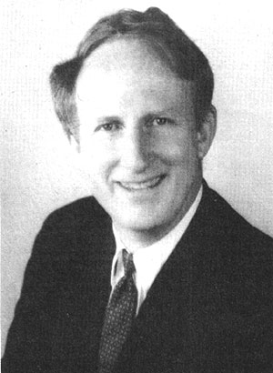 Figure 1 B. Graphs resulting from simulation of the model in Figure 1 A. Available world fuel reserve was taken as 5 X 10 19 kilocalories and energy converted from the solar input and converged into man's productive system of growth and maintenance was 5 X 10 16 kilocalories when structure was 10 18 kilocalories. Peak of structural growth was variable over a 50-year period depending on amounts diverted into waste pathways. |
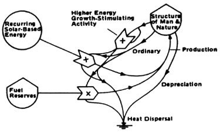 Figure 1 C. The steady state observed in some simulations of Figure 1 A was an oscillating one as in the graph shown here. |
|
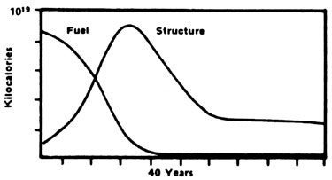 Figure 2. Energy flow diagram illustrating energy laws, and the difference between net and gross energy flows. |
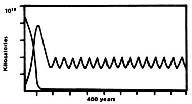 Figure 3. Relationships of money cycles to the energy circuit loops. |
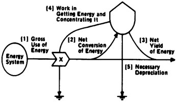 Figure 4. Relationship of general structural maintenance to diversity and secondary energy sources. |
|
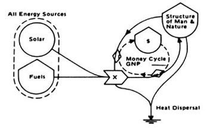 Figure 5 A. Man a minor part of the complex forest ecosystem. |
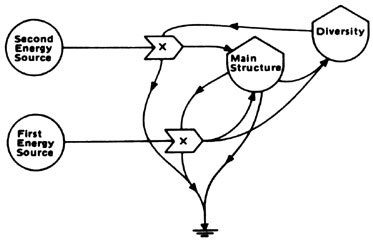 Figure 5 B. Man a major partner in agricultural system on light alone. |
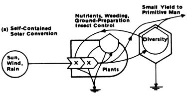 Figure 5 C. Fossil-fuel-subsidized agriculture as a colonial member of a technological society of man with maximum possible solar conversion. |
|
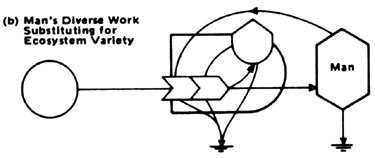 Figure 6 A. Diagram showing how energy sources and energy loss pathways affect the balance of payments and general economic competition position of single country. Better balance results when one's own energy sources are better, and one's waste less. |
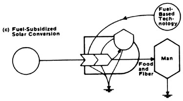 |
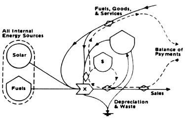 |
|
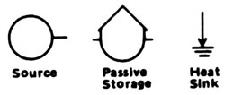 |
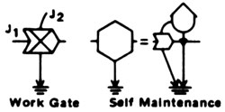 |
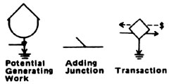 |